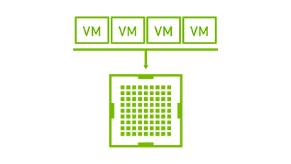
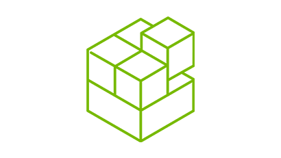
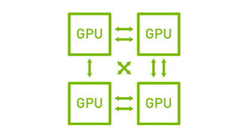
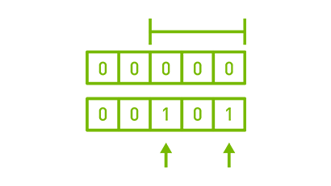

Виртуализация вычислений для ИИ,
глубокого обучения и обработки данных
NVIDIA Virtual Compute Server (vComputeServer) обеспечивает ускоренную виртуализацию серверов из дата-центров при помощи GPU, что позволяет выполнять самые ресурсоемкие рабочие нагрузки: задачи ИИ, глубокого обучения и обработки данных, на виртуальной машине (VM).
Возможности

Совместное использование GPU
Совместное использование GPU (частичное) возможно только с технологией NVIDIA vGPU. Ресурсы GPU можно распределить между несколькими виртуальными машинами, что повышает утилизацию для более легких нагрузок, требующих ускорения на GPU.

Объединение GPU
Виртуальная машина может получить доступ к мощности нескольких GPU, что часто необходимо для ресурсоемких задач. vComputeServer поддерживает как вычисления на системах с несколькими vGPU, так и одноранговые вычисления. В системах с несколькими vGPU графические процессоры не объединяются напрямую. В одноранговой сети используется NVLink для более высокой пропускной способности.
Управление и мониторинг
vComputeServer обеспечивает поддержку мониторинга на уровне приложений, гостевых ОС и серверов. Упреждающее управление позволяет проводить живую миграцию, приостанавливать и возобновлять работу и определять пороговые значения, которые отражают динамику использования – и все это при помощи SDK для управления vGPU.

NGC
NVIDIA GPU Cloud (NGC) – это реестр ПО, оптимизированного для GPU, для упрощения работы с задачами глубокого и машинного обучения и НРС. Теперь реестр поддерживает виртуализированные среды с NVIDIA vComputeServer.

Одноранговые вычисления
NVIDIA® NVLink™– это высокоскоростное прямое соединение между GPU. Технология обеспечивает более высокую пропускную способность, большее число соединений и улучшенную масштабируемость для для конфигураций с несколькими GPU. Теперь соединение поддерживает технология NVIDIA Virtual GPU (vGPU).

Код исправления ошибок и удаление страниц
Код исправления ошибок и удаление страниц обеспечивают более высокую надежность для вычислительных приложений, которые чувствительны к повреждению данных. Это особенно важно в крупномасштабных кластерных вычислительных средах, где графические процессоры обрабатывают очень большие наборы данных и/или запускают приложения на длительный период.
NVIDIA vComputeServer
Рекомендуемые GPU
| NVIDIA T4 | NVIDIA V100 (SXM2) | |
|---|---|---|
| Ядра RT | 48 | - |
| Тензорные ядра | 320 | 640 |
| Ядра CUDA® | 2560 | 5120 |
| Память | 16 Гб GDDR6 | 32 Гб HBM2 |
| FP 16/FP 32 (со смешанной точностью) | 64 Терафлопса | 125 Терафлопс |
| FP 32 (с одинарной точностью) | 8,1 Терафлопса | 125 Терафлопс |
| FP 64 (с двойной точностью) | - | 7,8 Терафлопса |
| NVLink: число GPU на виртуальную машину | - | До 8 |
| Код коррекции ошибок и удаления страниц | есть | есть |
| Число GPU на виртуальную машину | До 16 | До 16 |
Партнеры по виртуализации
Часто задаваемые вопросы
Чем vComputeServer отличается от GRID vPC/vApps и Quadro vDWS?
GRID vPC/vApps и Quadro vDWS – клиентские вычислительные решения для виртуализации бизнеса и работы с графикой и видео. vComputeServer разработан для ресурсоемких серверных нагрузок: задач ИИ, глубокого обучения и обработки данных.
Условия лицензии для vComputeServer такие же, как для GRID vPC/vApps и Quadro vDWS?
Нет, vComputeServer лицензируется иначе. На GRID vPC/vApps и Quadro vDWS приобретается постоянная или годовая подписка по числу одновременных пользователей. Так как vComputeServer предназначен для серверных нагрузок, лицензия привязана к GPU, а не к пользователю. На vComputeServer приобретается годовая подписка по лицензии GPU. Подробнее о лицензии можно прочитать в руководстве «Комплектации, цены и лицензии NVIDIA Virtual GPU».
Какие GPU NVIDIA поддерживаются vComputeServer?
Для vComputeServer рекомендуется использовать NVIDIA V100 и NVIDIA T4. Также поддерживаются Quadro RTX™ 6000 и RTX 8000 и графические карты с архитектурой Pascal: NVIDIA P40, P100 и P6.
Какие серверы сертифицированы для запуска vComputeServer?
Полный список сертифицированных серверов для всех продуктов vGPU можно посмотреть здесь.
Можно ли использовать контейнеры с vComputeServer?
Да, контейнеры можно запускать на виртуальных машинах с vComputeServer. NVIDIA NGC предоставляет полноценный каталог контейнеров с ускорением на GPU для глубокого и машинного обучения и НРС. Нагрузки также можно выполнять прямо на виртуальной машине без контейнеров при помощи vComputeServer.